Agent 自我进化三大技术路线：存技能、训技能、零数据自训
Agent 自我进化三大技术路线：存技能、训技能、零数据自训
来源：微信公众号 归档日期：2026-09-16 抓取状态：成功 原文字符：24113｜配图：26 张
摘要速览
- 自进化 Agent（Self-Evolving Agent）的核心诉求是三个能力：能存（沉淀成功模式、失败教训、可迁移技能）、能用（新任务时检索调用并内化）、能进化（经验可更新、合并、淘汰）。
- 动因来自四个老大难问题：大模型静态知识、上下文有限、重复犯错、训练昂贵。
- 按两个维度分成三类路线：①是否更新模型权重；②是否依赖人工数据。
- 路线一 经验/Skill 存储型：不更新权重、依赖人工，代表 AutoSkill、EvoSkill、MemSkill、CoEvoSkills、SE-Agent、Hermes——相当于给 Agent 配一本工作笔记。
- 路线二 RL 训练型：更新权重、依赖人工，代表 EvolveR、SAGE、SkillRL、SKILL0、SkillOS、AgentEvolver——把经验通过强化学习写进权重。
- 路线三 0 数据自学型：更新权重、不依赖人工，代表 Agent0、Tool-R0、Absolute Zero——让 Agent 之间互相出题、互相考试。
核心内容
1. 为什么要自进化
大模型的四个结构性限制：
- 静态知识：权重训练完成后不再变化，新经验进不去。
- 上下文有限：一次任务里学到的东西，会话结束就丢。
- 重复犯错：同样的坑反复踩，没有机制把教训固化下来。
- 训练昂贵：为每个新领域重新训练或微调不现实。
2. 三个能力目标
- 能存：把成功模式、失败教训、可迁移技能沉淀成外部可检索的资产。
- 能用：新任务来了能检索到相关经验，并把它内化进当前决策。
- 能进化：经验库本身可以更新、合并、淘汰，避免无限膨胀与过时污染。
3. 三类技术路线
路线一：经验 / Skill 存储型（不更新权重、依赖人工） 代表工作：AutoSkill、EvoSkill、MemSkill、CoEvoSkills、SE-Agent、Hermes。 本质上是给 Agent 配一本工作笔记：不改模型，只在外部维护技能与经验，让 Agent 在新任务里检索取用。优势是可控、可审计、成本低；局限是经验质量依赖人工整理，Agent 自身不会变得更"聪明"。
路线二：RL 训练型（更新权重、依赖人工） 代表工作：EvolveR、SAGE、SkillRL、SKILL0、SkillOS、AgentEvolver。 把交互中积累的经验通过强化学习真正写进模型权重。优势是能力内化、推理时无额外检索开销；代价是训练成本高、需要人工构造奖励与数据。
路线三：0 数据自学型（更新权重、不依赖人工） 代表工作：Agent0、Tool-R0、Absolute Zero。 让 Agent 之间互相出题、互相考试，用自生成的任务与反馈代替人工标注。这是自动化程度最高也最难稳定的一类。
文章还包含代表工作的详解、横向对比表格与关键洞察。
可执行启发
- 选路线先问两个问题：是否必须让能力内化进权重？是否有预算和人力做数据与奖励设计？两个都否，就停在路线一。
- 大多数个人与团队场景的性价比最优解是路线一：把经验做成可检索的 Skill / 记忆库，先解决"重复犯错"再谈"变强"。
- 设计经验库时把"存、用、进化"当成三个独立接口来建设：存要有结构化字段，用要有检索策略，进化要有合并与淘汰规则。
- 谨慎对待路线三：自生成任务的分布漂移风险高，缺少人工锚点容易越练越偏。
归属：[[02-输入/按主题/AI与效率/_index|AI与效率]]
我的想法
（待补充）
原文沉淀
目录
- 01 自进化 Agent 介绍
- 1.1 什么是自进化 Agent？
- 1.2 为什么这件事现在被重视起来了？
- 1.3 三大技术路线一览
- 02 第一类：经验/Skill 存储型（不更新模型权重）
- 2.1 AutoSkill（arXiv: 2603.01145）
- 2.2 EvoSkill（arXiv: 2603.02766）
- 2.3 MemSkill（arXiv: 2602.02474）
- 2.4 CoEvoSkills（arXiv: 2604.01687v2）
- 2.5 SE-Agent（arXiv: 2508.02085）
- 2.6 第一类总结：还是要训练数据的
- 核心点 1. 看似不训练，其实仍要训练数据
- 核心点 2. 核心是"存下经验/Skill"
- 核心点 3. 总结这一步，被严重低估
- 核心点 4. 横向 vs 纵向总结
- 03 第二类：基于 RL 的训练型自进化（这是重点）
- 3.1 EvolveR（arXiv: 2510.16079）
- 3.2 SAGE（arXiv: 2512.17102）
- 3.3 SkillRL（arXiv: 2602.08234）⭐
- 3.4 SKILL0（arXiv: 2604.02268）⭐
- 3.5 SkillOS（arXiv: 2605.06614）⭐⭐
- 3.6 AgentEvolver（arXiv: 2511.10395）⭐
- 探索：高温 LLM 广度优先（N_b 步）+ 深度优先探索环境
- 合成：从探索轨迹蒸馏 + 用户偏好约束 → 生成任务 g 与参考解
- 筛选：词法去重 + 语义相似度 + 可行性验证
- 混合（可选）：
- 3.7 第二类总结
- 04 第三类：0 数据自学型
- 4.1 Agent0（arXiv: 2511.16043）
- 4.2 Tool-R0（arXiv: 2602.21320）
- 4.3 Absolute Zero（arXiv: 2505.03335）
- 4.4 第三类总结：真·不需要训练数据
- 核心点 1. 全靠出题的 Agent 自己
- 05 横向对比：四篇代表工作的"三角色"视角
- 5.1 核心对比表
- 5.2 一行式速记
- 5.3 强模型依赖程度
- 5.4 数据依赖程度
- 5.5 范式演进脉络
- 06 关键洞察：被忽视的"总结者"
- 6.1 总结者，是被严重低估的关键模块
- 6.2 自主性 × 总结质量的二维空间
- 6.3 横向 vs 纵向总结的融合空间
- 07 写在最后
- 附录 A：论文索引
- 附录 B：评估数据集索引
- 腾讯PCG大数据平台部
- ⭐️⭐️ 新一代全链路数据AI助手——Dola ⭐️⭐️

作者：horacebao、ashexie
当 Agent 自己会出题、自己会答题、还能把答错的经验沉淀成下一次的"技能包"——一个永远在长大的 Agent，到底能走多远？ 十几篇论文反复啃读，从"存技能"到"训技能"，再到"零数据自训"，我们终于摸清了自进化 Agent 这条赛道的脉络。本文将带你深入 Agent 的"经验大脑"——从把经验写进文件，到把经验训进权重，再到完全无人工数据的自我循环，一步步拆解研究路径。
一个完全自主、越用越强的 Agent，有可能实现吗？本文聚合了现有的前沿探索工作，向大家展现这一方向上的最新成果。话不多说，现就开启学习之旅吧——本次文章覆盖自进化 Agent 的三大技术路线、代表工作详解、横向对比、关键洞察等话题。
01 自进化 Agent 介绍
1.1 什么是自进化 Agent？
自进化 Agent（Self-Evolving Agent）指的是一类能够在与环境/用户交互过程中自动积累经验、提炼能力、并在后续任务中复用与提升的智能体。简单来讲：让 Agent 自己越用越聪明，而不是每次都靠人工去喂数据、调提示词、改模型。
它的核心诉求可以拆成三件事：
- 能存：把交互过程中沉淀下来的有价值的东西（成功模式、失败教训、可迁移技能）存下来；
- 能用：在新任务中能把之前存下来的东西检索/调用/内化进自己的决策；
- 能进化：经验本身是动态的，能更新、能合并、能淘汰，避免越攒越乱。
1.2 为什么这件事现在被重视起来了？
回到大模型本身的几个老大难问题：
- 静态知识：训练完成那一刻起，模型对世界的认知就被冻结了；
- 上下文有限：再长的上下文窗口也总有边界，多轮交互终究"断片"；
- 重复犯错：今天教会它的事，明天还会再犯一遍；
- 训练贵：每次想让模型变强一点，要么 SFT 要么 RL，都得重新跑一遍。
而自进化 Agent 想要的正是绕开这些限制：让经验本身成为模型能力的延伸或更新通道。这件事在学术上不算新概念（早期的强化学习+经验回放就是雏形），但在大模型时代被重新点燃，本质是因为：
- LLM 本身具备总结归纳的能力（自己能给自己写笔记了）；
- Agent 形态的产品越来越多，长程交互场景终于有了真实需求；
- 高质量人工标注数据越来越贵，社区开始探索"少人工 / 无人工"路线。
1.3 三大技术路线一览
我们把目前调研到的工作按"是否更新模型权重"和"是否依赖人工数据"两个维度划成了三类：
| 路线 | 是否更新模型权重 | 是否依赖人工数据 | 代表工作 |
|---|---|---|---|
| 第一类：经验/Skill 存储型 | ❌ 不更新 | ❌ 依赖 | AutoSkill、EvoSkill、MemSkill、CoEvoSkills、SE-Agent、Hermes |
| 第二类：RL 训练型 | ✅ 更新 | ❌ 依赖 | EvolveR、SAGE、SkillRL、SKILL0、SkillOS、AgentEvolver |
| 第三类：0 数据自学型 | ✅ 更新 | ✅ 不依赖 | Agent0、Tool-R0、Absolute Zero |
简单一句话来理解三类工作的差异：
- 第一类像是给 Agent 配了一本"工作笔记"，模型本身不动，只在需要时翻阅；
- 第二类则是直接把"工作笔记"上的经验通过 RL 写进模型的权重里，让 Agent 真正"长本事"；
- 第三类更激进——干脆连"老师"都不要了，让 Agent 之间互相出题互相考试，自己跟自己打。
下面分别展开。
02 第一类：经验/Skill 存储型（不更新模型权重）
特征：不训练、跨会话保留上下文、文件式存储；核心是把经验沉淀为可检索/可复用的"技能（Skill）"。
类比来看，这类工作就像是给 Agent 配了一个"外挂大脑"，本体（base LLM）保持冻结，所有的"成长"都发生在外挂里。
2.1 AutoSkill（arXiv: 2603.01145）
TLDR：基础款，动态增删改查 Skill 来防止 Skill 库爆棚。
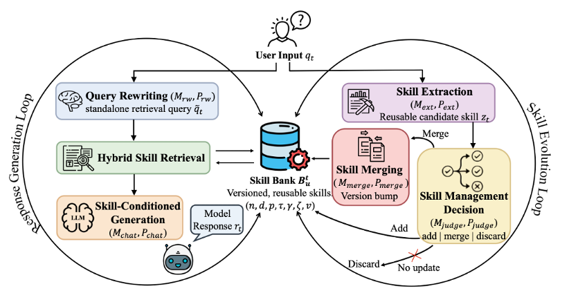
整体设计是一个非常经典的双环结构：
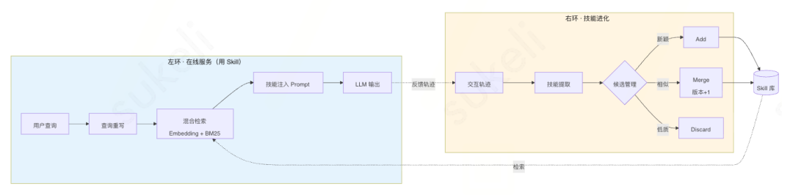
- 左环——在线服务（用 Skill）
- 查询重写：把用户原始问题改写成更适合检索的形式
- 混合技能检索：语义相似度（Embedding）+ 词汇相关性（BM25）双管齐下
- 技能注入生成：把检索到的技能渲染为外部记忆上下文，注入到提示词里
- 右环——技能进化循环（更新 Skill）
- 技能提取：从用户交互信号中抽取可重用的技能候选
- 候选技能管理：判断该 Add（新增）/ Merge（合并）/ Discard（丢弃）
- 版本化合并：语义并集更新，保留技能身份并更新版本号
评估数据集是 WildChat-1M，但没有具体性能指标——论文里只看了抽出来的 skill 数量。这其实是这一类工作最大的痛点：评估缺位。
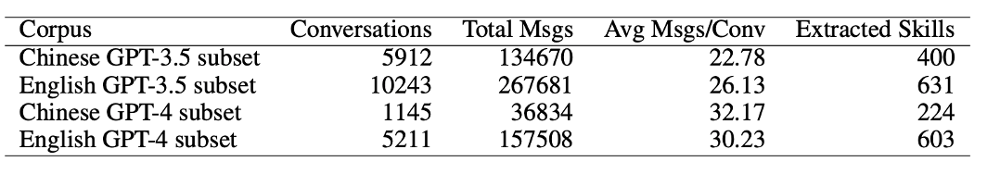
2.2 EvoSkill（arXiv: 2603.02766）
TLDR：让多个 Agent 分工协作——一个执行、一个反思、一个落地——把"失败"变成"新 Skill"，并用 Pareto 前沿机制保证 Skill 库永远精而不滥。
EvoSkill 来自 Sentient 和弗吉尼亚理工的合作工作，主张是把传统 Agent "失败即重试" 的笨办法改造成 "失败即学习" 的进化闭环。它的最大特点是把 Skill 当作一等公民来升级，而不是只在 prompt / code 层面做文字游戏。
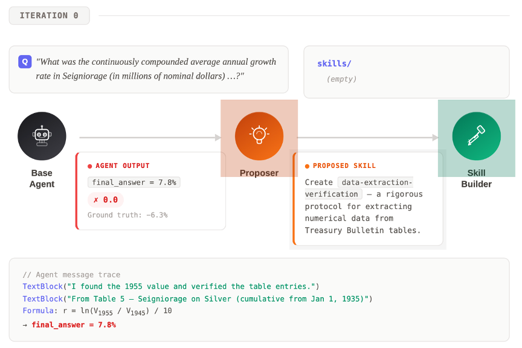
三 Agent 分工：
- Executor Agent（执行者）：拿当前 Skill 库去跑任务，把失败案例完整记录下来——失败原因、轨迹、最终错误结果一起留档。这是后面所有进化的"原材料"。
- Proposer Agent（反思者）：扮演"诊断医生"的角色。它读完 Executor 的失败记录后，会先做根因分析（为什么失败？是缺技能？还是技能用错了？），再基于过往的反馈历史决定新建一条 Skill还是修改已有 Skill——例如在金融文档 QA 任务里它会自动总结出 "data extraction validation"（数据抽取校验）这样的可复用技能。
- SkillBuilder Agent（落地者）：把 Proposer 的自然语言提案变成结构化的 Skill 文件夹（含元信息、操作步骤、辅助脚本），并在小样本验证集上跑一轮单元化校验。
核心机制——Pareto Frontier 精英池：
新生成的 Skill 不是无脑入库，而是要跟已有 Skill 在多维指标上比较，只有在至少一个维度上严格优于现有 Skill 的才会进入精英池，否则丢弃或合并。这套机制保证了 Skill 库随着规模增长依然保持"精而不滥"——这也是它跟 AutoSkill 那种"全量保留 + 版本化"做法最大的不同。
评估亮点：
- OfficeQA 主任务：基于美国财政部公告（89K 页扫描财务文档）的复杂数值推理任务。基线准确率 60.6% → 进化后 67.9%（+7.3pp），主要靠两条自学到的 Skill 撑场：
- Data extraction validation —— 解决了之前表格解析时常见的"单元格错位"问题；
- Quantitative analysis with checkpoints —— 在金融数值计算环节强制加入校验点。
- 跨任务迁移：在 SealQA 上学到的 search persistence protocol（搜索坚持协议）直接挪到 BrowseComp 任务上，无需重新训练就带来 +5.3pp 的提升——这点跟后面 CoEvoSkills 的"transfer 不如自己 self-evo"结论形成有趣对比，说明只要 Skill 抽象得足够通用，是可以跨任务迁移的，但前提是抽象层级要选对。
PS：虽然叫"训练集"，但训练集只用来总结，不更新任何模型。 评论：在第一类工作里，EvoSkill 是"工程化程度"的中间档——比 AutoSkill 多了精英池筛选机制，但比 Hermes 那种带 GEPA 反向进化的还差一截。它的真正价值在于把"失败"明确写进了进化闭环，这也成了后续很多工作（包括 SkillRL 的 failure trajectory distillation）的直接灵感来源。
2.3 MemSkill（arXiv: 2602.02474）
TLDR：之前两个工作针对用户指令；MemSkill 只针对操作 Memory 的 Skill 做自进化。
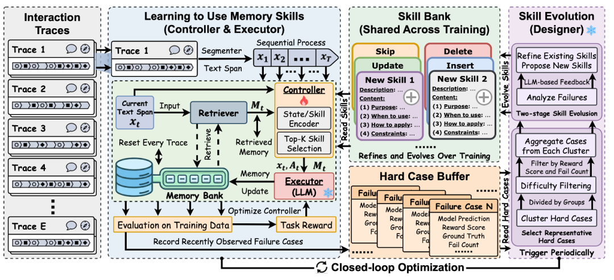
这个工作有意思的地方在于它把组件拆得很细：
- Retriever：基于 Qwen0.6B Emb 的相似度计算
- Controller：MLP 结构，接受 RL 训练（注意这是这一类里少见的"有训练"环节）
- Executor Designer Base LLM：全部冻住
它有两个并行的更新 Loop：
- Controller 更新：Retriever 抽取 Memory + 对话 → Controller 选 Skill → Executor 更新 Memory 库 → 用下游 F1 / Success Rate 作为 reward 训练 Controller
- Skill 库更新：训练中遇到的 Hard Case 交给 Designer 更新 Skill 库
亮点——Transfer Evaluation：
- 在 LLaMA 上训练所得 Controller & Skill 迁移到 Qwen 上仍然有效；
- 在 LoCoMo 上训练所得 Controller & Skill 迁移到 LongMemEval 上仍然有效。
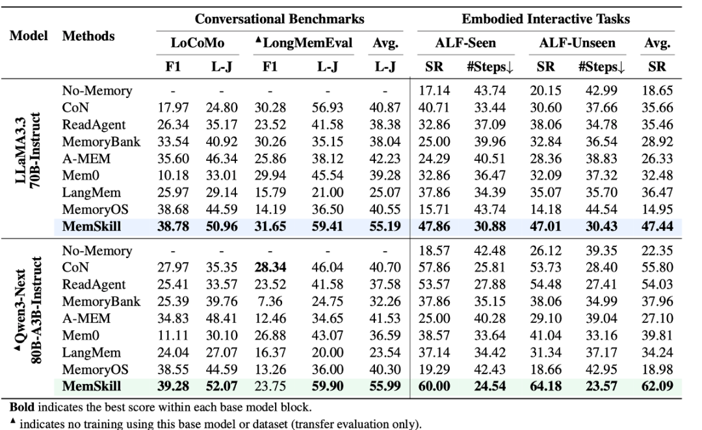
由于 Base LLM 不动，仍归为"无训练"类。但 MemSkill 给前面两篇工作（AutoSkill / Hermes Agent 没有性能评估）提供了一条参考思路：在训练集上构建 Skill，在测试集/其他数据集的测试集上评估。当然，这种做法下"喂给 Agent 的样本顺序"就变得很重要。
2.4 CoEvoSkills（arXiv: 2604.01687v2）
TLDR：给每条新总结的 Skill 配一个"考官"（Verifier），生成的 Skill 必须先通过考试才能进库；通不过就带反馈打回，让 Generator 重写——这是把软件工程的"单元测试"理念搬到了 Skill 进化里。
CoEvoSkills 想解决的是前面几篇工作的一个老大难问题：Skill 总结出来到底靠不靠谱？ AutoSkill / EvoSkill 都是"生成完了直接入库"，质量基本靠 LLM 自觉。CoEvoSkills 的回答是：不能靠自觉，得有验证闭环。
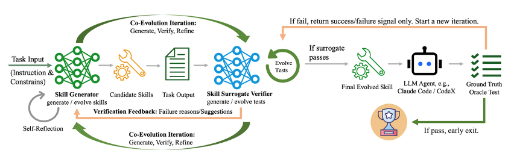
核心组件——Generator + Verifier 双子星：
- Skill Generator：从执行轨迹里提炼候选 Skill。除了写出 Skill 本身（描述 + 步骤），还要同步生成对应的单元测试（输入样例、期望输出、验证逻辑）。
- Skill Surrogate Verifier：在一个隔离的 sandbox 环境里跑 Generator 写的 Skill 与单元测试，返回结构化验证反馈（不是简单的 pass/fail，而是带"失败原因"和"建议修改方向"的自然语言反馈）。
- Co-Evolution Iteration（共进化迭代）：Skill 与 Test 同时进化——这跟传统软件开发里"先写测试再写代码"的 TDD 有点像。如果 Skill 多次都过不了 Test，可能是 Test 本身写得不合理；反过来如果 Test 太宽松导致烂 Skill 也进库了，下游评估时就会暴露出来。两者互相牵制，逐步收敛到"高质量 Skill + 高严谨度 Test"的稳态。
两阶段验证：
- Surrogate 验证（廉价）：内置的 Verifier 直接给反馈，跑得快、能快速迭代；
- Oracle 验证（昂贵但权威）：通过 Surrogate 的 Skill 还要在真实 LLM Agent（论文中用了 Claude Code / CodeX 等）上跑端到端任务，只有真的解决了任务才算"进化成功"。如果 Oracle 测试失败，整条 Skill 直接打回。
亮点结论——Self-evo 优于 Cross-model Transfer：
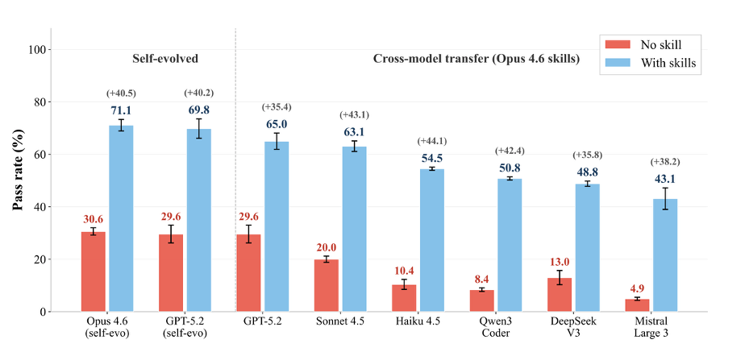
论文做了一组很有意思的对照实验：把强模型（Opus 4.6）self-evo 出来的 Skill 直接 transfer 到弱模型（Haiku 4.5、Qwen3-Coder、DeepSeek V3、Mistral Large 3）上，跟让弱模型自己 self-evo 比较——结果是：
- self-evo（强模型自己用自己的 Skill）：Opus 4.6 从 30.6% → 71.1%（+40.5），GPT-5.2 从 29.6% → 69.8%（+40.2）；
- cross-model transfer：把 Opus 4.6 的 Skill 给到弱模型，提升从 +35.4 到 +44.1 不等，但绝对值都明显低于让模型自己 self-evo（如 Mistral Large 3 才到 43.1%）。
这个观察的含义是：Skill 跟模型本身的"风格"是耦合的——强模型生成的 Skill 在强模型自己上效果最好；强迁到弱模型上，弱模型未必能完整地"读懂并执行"那些精巧的步骤。这点对工程界的启示很大：与其花大钱让 GPT-5 / Claude 4.6 给你的产品蒸馏 Skill，不如让产品自己用的小模型来 self-evo——前者贵且效果未必更好。
PS：虽然有"信号"，但实际上不涉及训练，仅仅是驳回 Generator 创建的 Skill。 评论：CoEvoSkills 的"测试驱动 Skill 进化"思路在第一类里独树一帜，本质上是把 Verifier 当成 "便宜的 reward model" 用——这跟第二类工作里训练 Curator 的逻辑已经很接近了，只差最后一步：把 Verifier 也训起来。
2.5 SE-Agent（arXiv: 2508.02085）
TLDR：与其反复"自我反思"在同一条轨迹上小修小补，不如一次跑出多条轨迹，让它们之间互相借鉴、互相打磨——SE-Agent 把 Agent 自进化从"单线程深度修补"切到了"多线程横向融合"。
SE-Agent 来自 OPPO 的 OpenSearch-AGI 团队和复旦大学等机构，被收录于 NeurIPS 2025。它瞄准的是前面所有 self-refine / ReAct 类工作的共同短板——单轨迹反思的视野太窄。当一条轨迹整体走偏的时候（例如一开始就选错了策略），无论怎么 reflection 都救不回来；只有跳出当前轨迹，从多条不同策略的轨迹里学习，才能突破"局部最优"。
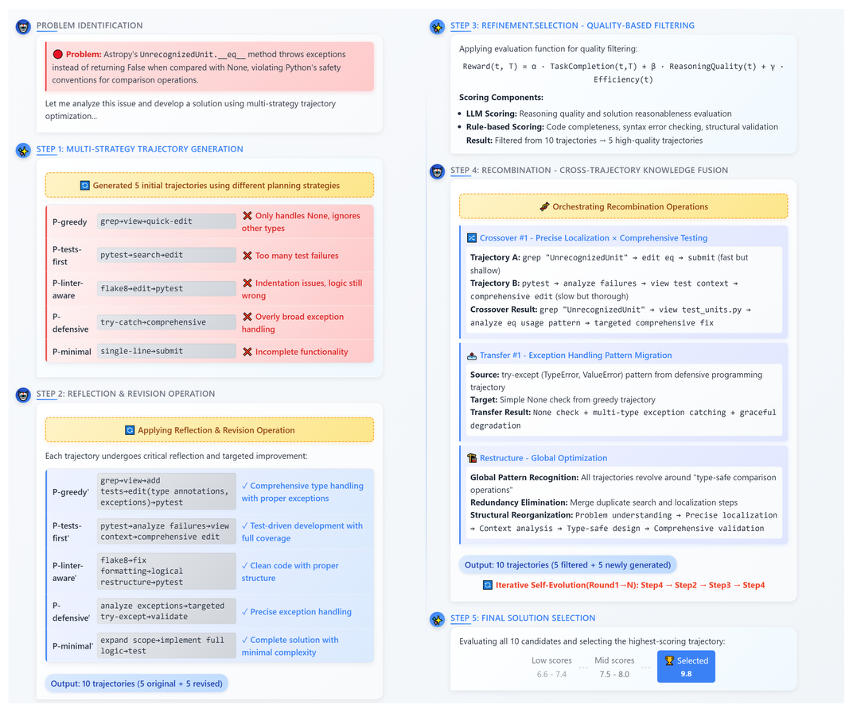
完整五阶段流程：
- 多策略轨迹生成（Multi-Strategy Generation）：用不同的"性格"采样 N 条轨迹。论文里给了 5 种典型策略——
P-greedy（贪心快出）、P-tests-first（先写测试）、P-linter-aware（关注代码风格）、P-defensive（防御式编程）、P-minimal（最小可行）。同一道题，每种策略得到的轨迹完全不同，犯的错也不同。
- 反思修订（Revision）：对每条轨迹独立做一遍传统 self-refine——找到执行偏差点，针对性修正。这一步是"纵向"的（深耕单条轨迹）。
- 质量过滤（Quality-based Filtering）：用一个综合评分函数
Reward(t,T) = α·TaskCompletion(t) + β·ReasoningQuality(t) + γ·Efficiency(t)给每条轨迹打分，把候选数从 10 条砍到 5 条。这避免了下一步重组时被低质量轨迹"污染"。
- 跨轨迹重组（Recombination）⭐核心创新：这一步是 SE-Agent 区别于所有 self-refine 工作的关键。它对剩下的 5 条高分轨迹做两类操作：
- Crossover（交叉）：把"轨迹 A 在步骤 5 的精确定位"嫁接到"轨迹 B 的全面测试覆盖"上，合成出一条原本任何单条策略都达不到的混合轨迹；
- Transfer（迁移）：把"防御式策略里学到的 try-except 异常处理"迁移到"贪心策略里缺失异常处理"的位置；
- Restructure（重构）：识别多条轨迹共有的全局模式（如"所有轨迹都漏掉了 type-safe 比较"），统一抽象后做一次系统级重写。
- 最终方案选取（Final Solution Selection）：从 10 个候选（5 原始 + 5 重组）中选最高分的作为输出。整个流程可以迭代多轮（论文里给的 N=4 时已经收敛），每一轮的结果会再喂给下一轮做新的多策略生成。
关键观察——横向 vs 纵向：
它定义了三种轨迹层操作（与单条轨迹的 self-refine 形成对照）：
- 修订（纵向）：找出错误步骤并纠正——这是传统 self-refine 在做的事；
- 重组（横向）：跨轨迹借用成功的子片段——这是 SE-Agent 的真正创新；
- 精炼（横纵融合）：在重组后的轨迹上再做一轮纵向打磨。
跟其他工作的关键区别是总结的方向不同：其他第一类工作几乎全是纵向总结（基于单条历史轨迹/对话），SE-Agent 是横向总结（基于多次采样的多条轨迹）。这个"横向 vs 纵向"的概念会贯穿全文——它是后面我们讨论"研究空白"时的一个重要锚点。
评估：
- 主战场是 SWE-Bench Verified（GitHub 真实代码修复任务）。SE-Agent 让多个底层 LLM 都拿到了显著提升，最高一档实现了 +55% 相对改善——在这个领域属于很扎实的提升。
- 跟 Claude Code 等工业级 Coding Agent 也做了对比，验证了"轨迹级进化"是一个与底层模型选择正交的优化维度。
评论：SE-Agent 是第一类里思路最"野"的——它没有 Skill 库这种长期记忆机制，但用"一次性多采样 + 跨轨迹融合"的办法做到了类似的效果。某种意义上它跟第二类的 SAGE（Sequential Rollout）是镜像关系：SE-Agent 是横向采，SAGE 是横向用；前者不训模型，后者用 RL 让模型学会自己横向沉淀。
2.6 第一类总结：还是要训练数据的
写到这里，其实第一类工作有几个统一的特征值得提一下：
核心点 1. 看似不训练，其实仍要训练数据
不管是人为交互提供反馈，还是训练集提供反馈，本质都是训练数据，没有真的做到"零数据"。
核心点 2. 核心是"存下经验/Skill"
这一类工作的灵魂在于把交互的副产物沉淀下来，做成可检索的资产。
核心点 3. 总结这一步，被严重低估
几乎所有工作都默契地把 Skill 总结这一步交给了"冻结的 base 或独立的 LLM"——按理说这是整条 pipeline 最关键的环节，但针对总结去优化的工作几乎没有。这是一个值得深挖的空白。
核心点 4. 横向 vs 纵向总结
- 纵向总结（其他工作）：根据历史对话/单条轨迹总结；
- 横向总结（SE-Agent）：根据多次采样的多条轨迹总结。
二者都是"存 skill"的不同侧面。
03 第二类：基于 RL 的训练型自进化（这是重点）
特征：通过 RL 训练直接更新模型权重，让模型从根本上变强。这一类是当前学术界与工业界的主流方向，本报告的重点也在这里。
3.1 EvolveR（arXiv: 2510.16079）
TLDR：算是这一类的基础型，分两阶段。
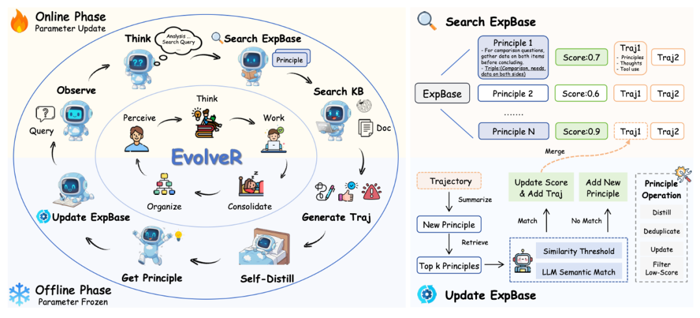
- 离线阶段：Agent 跑完一批任务后，对所有轨迹做提炼，把具体的交互步骤抽象成更通用的"策略原则"，存入原则库（策略原则可以视作一种 Skill）。
- 在线阶段：Agent 在新任务里实时检索这些原则，指导自己的行动，同时又产生新轨迹反哺下一轮蒸馏训练。
Reward 设计：最终结果 + 格式 reward 评估：Natural Questions、HotpotQA、TriviaQA、PopQA
PS：看起来很像"RL by talking"，但是仍然要靠标注数据集 Ground Truth 去训练的。也就是 talking 的数据只用来蒸馏经验/skill，不用来当训练标签。
3.2 SAGE（arXiv: 2512.17102）
TLDR：提出 Sequential Rollout —— RL rollout 时序列化地跑一系列相似任务，后序任务训练时就可以使用前序生成的 skill。
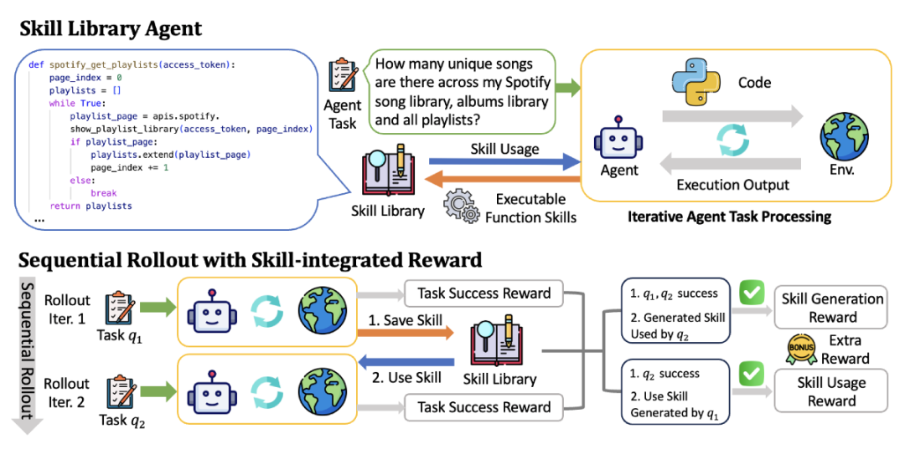
这个思路很巧妙：每次 rollout 不是跑一个任务，而是让 Agent 依次跑一串相似的任务。跑早期任务时积累下来的技能，在同一个 rollout 里的后续任务里就能直接用。这意味着在训练过程中，模型就被迫学会"生成技能"和"复用技能"，不只是会完成任务。
除了任务完成的结果奖励，SAGE 还设计了 Skill-integrated Reward——额外的信号专门激励技能的生成和调用。评估数据集是 AppWorld（APP 交互数据集）。
3.3 SkillRL（arXiv: 2602.08234）⭐
来到本文重点关注的四篇工作之一。
核心主张：用强模型（o3）蒸馏 Skill，再通过 RL 训练弱模型学会使用，并递归进化技能库。
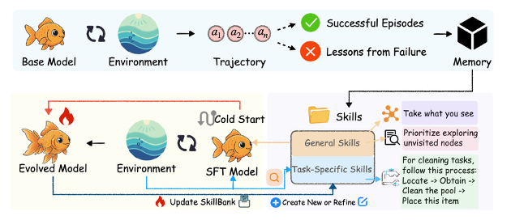
统一三角色梳理：
| 角色 | 配置 |
|---|---|
| 训练题目来源 | 官方数据集训练集：ALFWorld（7,500 条 SFT）、WebShop（2,400 条 SFT）、7 个搜索 QA 数据集 |
| 出题者 | 无独立出题者，直接使用数据集 |
| 解题者 | Qwen2.5-7B-Instruct ✅ 训练 （Cold-start SFT → GRPO RL） |
| Skill 总结者 | OpenAI o3 ❌ 不训练 |
Skill 总结机制：
- 成功轨迹 → 提取关键决策点与可迁移模式
- 失败轨迹 → 合成失败教训（失败点 + 错误推理 + 应对策略）
- 压缩比：10–20×
总体流程：解题者交互 → 轨迹交给总结者总结 skill → 下一轮训练时使用。
主要实验结果：
| 基准 | SkillRL | GRPO 基线 | 提升 |
|---|---|---|---|
| ALFWorld | 89.9% | 77.6% | +12.3% |
| WebShop SR | 72.7% | 66.1% | +6.6% |
| Search-QA avg | 47.1% | ~38.5% | +8.6% |
Skill 库增长：55 → 100 条（通用 12→20，任务专属 43→80）。
核心设计哲学：强模型提炼知识，弱模型通过 RL 学会使用知识。
评论：我们倾向于把这种归类于蒸馏，而非真正的进化。
3.4 SKILL0（arXiv: 2604.02268）⭐
核心主张：将 Skill 从推理时的"外挂上下文"内化到模型参数，实现零样本执行（每步 < 0.5K tokens）。
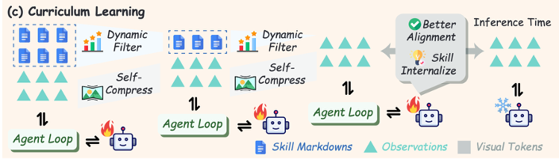
| 角色 | 配置 |
|---|---|
| 训练题目来源 | 直接继承 SkillRL 的 SkillBank（ALFWorld WebShop Search-QA 官方训练集） |
| 出题者 | 无 |
| 解题者 | Qwen2.5-VL-3B/7B-Instruct ✅ 训练 （三阶段渐进课程） |
| Skill 总结者 | 继承 SkillRL 的 o3，❌ 不训练 |
三阶段渐进课程：
| 阶段 | Skill 数量 | 目标 |
|---|---|---|
| Stage 1 | 6 条 | 学会调用 |
| Stage 2 | 3 条 | 减少依赖 |
| Stage 3 | 0 条 | 完全内化 |
核心设计哲学：从"使用技能"到"内化技能"的范式转变 —— 消除推理时的检索成本、Token 开销和噪声，把知识真正固化进模型权重。
SKILL0 不关心 Skill 从哪里来，只关心如何内化。它本质上是 SkillRL 的"下游消费者"。
3.5 SkillOS（arXiv: 2605.06614）⭐⭐
这是四篇里我们认为最有启发性的一篇。
核心主张：训练一个专门的 Curator，通过 RL 学会如何增 改 删 SkillRepo，而不是直接学如何使用 Skill。
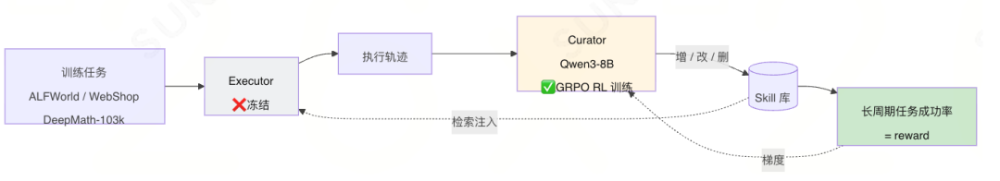
| 角色 | 配置 |
|---|---|
| 训练题目来源 | Agentic（ALFWorld、WebShop 官方训练集）+ 推理（DeepMath-103k 随机采样 33,000 条）；两步预处理：Gemini-2.5-Pro 标注属性标签 → 按相似度分组（group_size=8） |
| 出题者 | Gemini-2.5-Pro ❌ 不训练 ，仅离线标注每个任务的技能相关属性 |
| 解题者 | Executor ❌ 冻结，不训练 ；训练时用 Qwen3-8B；测试时用 Qwen3-8B 32B Gemini-2.5-Pro / Gemini-3.1-Flash-Lite；ReAct（Agentic 任务）+ CoT（推理任务） |
| Skill 总结者 | Qwen3-8B Curator ✅ GRPO RL 训练 |
核心设计哲学："学会如何管理技能，而不是学会如何使用技能" —— Executor 冻结，只训练 Curator，通过长周期间接奖励信号学习 Skill 的增删改策略。
这篇工作给出了两个对后续研究极其重要的结论：
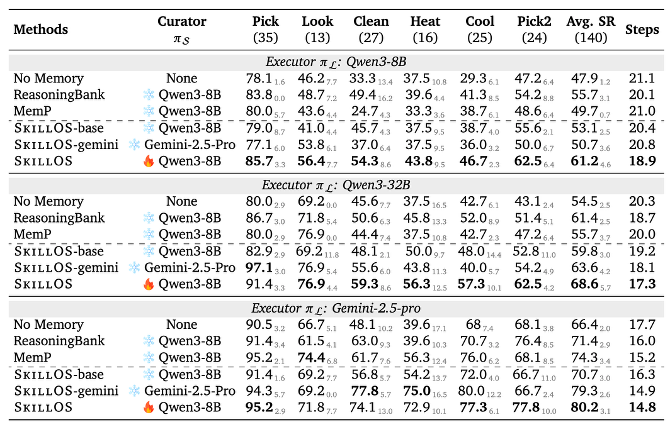
结论 1：训练过的小模型总结者 > 冻结的大模型总结者 在 SkillOS 的实验里，RL 训练过的 Qwen3-8B 作为 Curator，效果超过直接用冻结的 Gemini-2.5-Pro 作为 Curator。这说明"如何管理 skill"本身是一项可被训练的能力，而且小模型经过专门训练后能压过大模型直接使用。
结论 2：不动解题者，性能也能涨 在 ALFWorld 上，仅训练 Curator、解题者完全冻结的情况下，整体性能仍能取得长足进步。这意味着"换 Curator"是一条比"换 Executor"更轻量的优化路径。
3.6 AgentEvolver（arXiv: 2511.10395）⭐
核心主张：完全自主的三环自演化框架 —— 自出题、自解题、自总结经验，全链路无需人工标注。
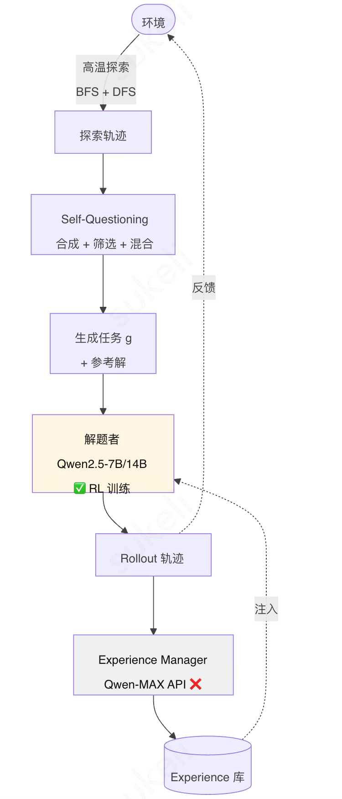
| 角色 | 配置 |
|---|---|
| 训练题目来源 | 环境探索生成（Self-Questioning） ，全自动 |
| 出题者 | LLM 自身（与解题者同一模型） ✅ |
| 解题者 | Qwen2.5-7B/14B-Instruct ✅ 训练 |
| Experience 总结者 | Experience Manager ❌ 不训练 （论文中没明说是什么模型，扒代码发现是调 Qwen-MAX API；本质上是阿里 Reme 记忆管理机制） |
Self-Questioning 四步流程：
探索：高温 LLM 广度优先（N_b 步）+ 深度优先探索环境
合成：从探索轨迹蒸馏 + 用户偏好约束 → 生成任务 g 与参考解
筛选：词法去重 + 语义相似度 + 可行性验证
混合（可选）：
特点：出题与解题使用同一个 Qwen2.5-7B/14B，RL 训练后形成出题质量与解题能力的双重提升。
3.7 第二类总结
第二类工作走得比第一类更远——把经验从"外挂"变成了"权重"。但仔细看仍能拎出几条共性：
核心点 1. 仍然依赖训练集反馈（除 AgentEvolver 外） 核心点 2. 核心是 RL rollout 时继承/更新之前的 skill核心点 3. 不算严格意义的"RL by talking" —— 因为反馈仍来自任务结果或人工标签，而不是交互对话本身
04 第三类：0 数据自学型
特征：完全不要人工标注的数据，靠 Agent 之间互相出题/解题闭环。
这一类的精神更激进：连数据集都不要，Agent 自己出题自己考自己。
4.1 Agent0（arXiv: 2511.16043）
TLDR：学习工具使用，一个 Agent 负责出题，一个 Agent 负责解题。
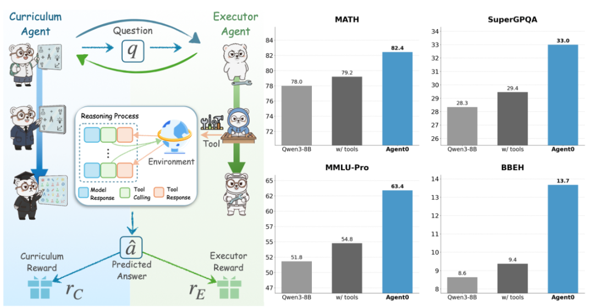
组件：
- Curriculum Agent (RL)：负责出题；reward = 答题 Agent 的不确定性 + 工具使用频率
- Executor Agent (RL)：负责解题；reward = 解题成功率
流程：
- 出题 Agent 先 RL 训练（答题 Agent 冻住作为 reward model）；
- 出题 Agent 冻住，给答题 Agent 出题做 RL 训练。
PS：在解题成功率 reward 上有一个比较大的问题——题目的答案是 Curriculum Agent 自己多采样投票选出来的 sliver answer。
评估集：数学类为主（GSM8K、AIME 等）。
4.2 Tool-R0（arXiv: 2602.21320）
TLDR：类似 Agent0，但做的是 general tool 而不是纯数学。
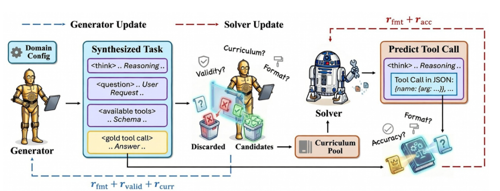
Reward 设计：
- Generator Agent：格式 reward + 合法性 reward（不能有幻觉 tool）+ 难度 reward（不能太难太简单）
- Solver Agent：格式 reward + 准确性 reward
PS：答案仍然是 Generator Agent 自己生成的 sliver answer。
评估集：ToolAlpaca、SealTool、NexusRaven。
4.3 Absolute Zero（arXiv: 2505.03335）
TLDR：单个模型同时扮演出题人和解题人，用代码执行器作为唯一的验证来源，完全不碰任何外部数据。
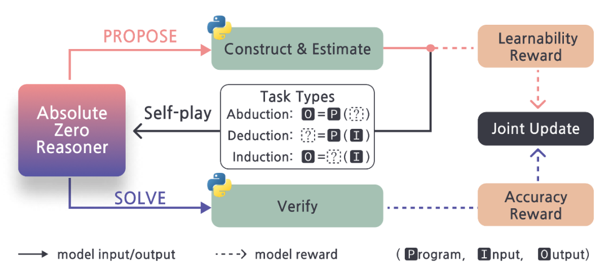
组件：
- 出题 Agent：reward = 1 − 答题 Agent 成功率；但成功率为 0 时 reward 也为 0（避免出太难的题）
- 答题 Agent：reward = 解题成功率
出题流程：题目为 [输入, 代码, 输出] 三元组，随机删除一个让答题 Agent 猜测，以代码执行器为最终判断标准。这是一个非常聪明的设计——它把"判分"这件事完全外包给了一个绝对客观的执行环境。
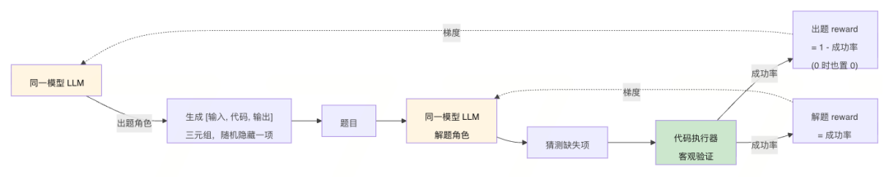
评估集：
- 代码：HumanEval、MBPP、LCB
- 数学：AIME24、AIME25、AMC、MATH-500、Minerva、Olympiad
4.4 第三类总结：真·不需要训练数据
通用流程：
出题 Agent 训练 → 出题构造数据集 → 解题 Agent 训练 → 出题 Agent 训练 …核心点 1. 全靠出题的 Agent 自己
核心点 2. 准确率判断大多靠对照出题 Agent 自己给出的答案——这是个隐患，sliver answer 的可靠性需要打问号
核心点 3. 最好要有自动化的判断标准——比如 Absolute Zero 用的代码执行器
核心点 4. 出题难度很重要——太难学不懂，太简单学不到，这个 reward shaping 是核心难点
核心点 5. 评估很混乱——只有数学类的 benchmark 勉强出现了多次，其余几乎完全没有重叠，可比性差
05 横向对比：四篇代表工作的"三角色"视角
第二类里 SkillRL → SKILL0 → SkillOS → AgentEvolver 这四篇我们想专门拎出来横向对比，因为它们最能反映长程 Agent 自进化的范式演进。
5.1 核心对比表
| 论文 | 训练题目来源 | 出题者 | 解题者（训练？） | Skill/Experience 总结者（训练？） |
|---|---|---|---|---|
| SkillRL | 官方数据集训练集 | — | Qwen2.5-7B ✅ 训练 | OpenAI o3 ❌ |
| SKILL0 | 官方数据集训练集 | — | Qwen2.5-VL-3B/7B ✅ 训练 | OpenAI o3（继承）❌ |
| SkillOS | 官方数据集训练集 | Gemini-2.5-Pro（仅离线分组，❌） | Executor 冻结 ❌ | Qwen3-8B Curator ✅ |
| AgentEvolver | 完全自动生成 | LLM 自身（与解题者同一模型） | Qwen2.5-7B/14B ✅ | Qwen-MAX API ❌ |
5.2 一行式速记
SkillRL： [训练集❌] [解题者 ✅] [总结者 ❌]
SKILL0： [训练集❌] [解题者 ✅] [总结者 ❌]
SkillOS： [训练集❌] [解题者 ❌] [总结者 ✅] ← 唯一训练总结者的工作
AgentEvolver： [出题者✅] [解题者 ✅] [总结者 ❌]5.3 强模型依赖程度
| 方法 | 依赖的强模型 | 用途 |
|---|---|---|
| SkillRL | OpenAI o3 | Skill 总结（核心） |
| SKILL0 | OpenAI o3（继承） | Skill 总结（核心） |
| SkillOS | Gemini-2.5-Pro（辅助）+ Qwen3-32B（Judge） | 标注分组 + 质量评估 |
| AgentEvolver | Qwen-MAX | Experience 提取 + 总结 |
可以看到：总结这一步，几乎所有人都默契地外包给了大模型 / 闭源 API，这跟我们前面在第一类总结里观察到的现象高度吻合。
5.4 数据依赖程度
高依赖外部数据 ←─────────────────────────────────────────→ 完全自主
│ │
SkillRL SKILL0 SkillOS AgentEvolver
（官方数据集） （复用 SkillRL） （官方+分组） （完全自生成）5.5 范式演进脉络
SkillRL (2602.08234)
强模型提炼知识 → 弱模型 RL 学会使用 → 递归演化技能库
↓
SKILL0 (2604.02268)
同样的技能库 → 渐进撤回 → 内化进参数 → 零样本执行（无检索开销）
↓
SkillOS (2605.06614)
冻结执行者 → 训练 Curator → 学会如何管理技能（增/改/删）
↓
AgentEvolver (2511.10395)
全链路自主 → 自出题 + 自解题 + 自总结 → 步骤级信用分配06 关键洞察：被忽视的"总结者"
6.1 总结者，是被严重低估的关键模块
把一三两类 + 四篇代表工作的"是否训练总结者"列在一起：
| 工作 | Skill 总结者是否训练 |
|---|---|
| AutoSkill | ❌ |
| EvoSkill | ❌（Claude Code w/ Opus 4.5） |
| MemSkill | ❌ |
| CoEvoSkills | ❌（Claude Code） |
| SE-Agent | ❌ |
| EvolveR | ❌（Qwen2.5） |
| SAGE | ✅（序列 rollout 中带 reward 总结） |
| SkillRL | ❌（OpenAI o3） |
| SKILL0 | ❌（继承） |
| SkillOS | ✅（唯一专门训练） |
| AgentEvolver | ❌（Qwen-MAX API） |
可以看到，针对总结者本身做训练的工作屈指可数——SAGE 算半个（在 RL 过程中有 skill reward），SkillOS 才是真正完整地把 Curator 当成主训练对象。
而 SkillOS 给出的实验结论——训练后的 8B Curator 优于冻结的 Gemini-2.5-Pro Curator——恰好印证了这件事的价值。
6.2 自主性 × 总结质量的二维空间
把四篇代表性工作放到两个维度上看：
总结者训练
▲
SkillOS │
│
│
─────────┼──────────► 题目自动生成
│
SkillRL/ │ AgentEvolver
SKILL0 │右上方那个空白象限——既自动生成题目、又训练总结者——目前没有一篇工作覆盖。这是当前最显眼的研究空白。
6.3 横向 vs 纵向总结的融合空间
第一类工作里的 SE-Agent 是横向（多次采样）总结，其他都是纵向（历史对话）总结。这两者在第二类工作里基本没有融合——SkillRL/SKILL0/SkillOS 仍以纵向为主。横向 + 纵向的融合会不会带来更稳健的 Skill 库？是一个开放问题。
07 写在最后
这一年多自进化 Agent 的研究节奏其实非常快，从"存技能"到"训技能"、从"依赖人工数据"到"零数据自训"，几乎每个月都能看到新工作冒出来。但仔细啃完之后会发现，还有大片研究空白没人去碰——尤其是"总结者本身的训练"和"完全自主 + 训总结者"这条交叉路径。
回过头看，这条赛道的本质问题其实只有一个：
如何让 Agent 在没有人工干预的情况下，把交互的副产物转化为下一次更强的能力？
无论是把经验存进文件、训进权重，还是让 Agent 之间互相出题，所有路径都在回答这一个问题的不同侧面。
附录 A：论文索引
| 简称 | arXiv | 类别 |
|---|---|---|
| AutoSkill | 2603.01145 | 第一类 |
| EvoSkill | 2603.02766 | 第一类 |
| MemSkill | 2602.02474 | 第一类 |
| CoEvoSkills | 2604.01687v2 | 第一类 |
| SE-Agent | 2508.02085 | 第一类 |
| EvolveR | 2510.16079 | 第二类 |
| SAGE | 2512.17102 | 第二类 |
| SkillRL | 2602.08234 | 第二类 |
| SKILL0 | 2604.02268 | 第二类 |
| SkillOS | 2605.06614 | 第二类 |
| AgentEvolver | 2511.10395 | 第二类 |
| Agent0 | 2511.16043 | 第三类 |
| Tool-R0 | 2602.21320 | 第三类 |
| Absolute Zero | 2505.03335 | 第三类 |
附录 B：评估数据集索引
| 数据集 | 使用工作 | 类型 |
|---|---|---|
| WildChat-1M | AutoSkill | 用户对话 |
| OfficeQA | EvoSkill | 办公图表 |
| LoCoMo / LongMemEval | MemSkill | 长程对话记忆 |
| SkillBench | CoEvoSkills | 技能 |
| ALFWorld | SkillRL SKILL0 SkillOS | 具身/Agentic |
| WebShop | SkillRL SKILL0 SkillOS | 网页购物 |
| Search-QA | SkillRL / SKILL0 | 检索问答 |
| AppWorld | SAGE | APP 交互 |
| NQ HotpotQA TriviaQA / PopQA | EvolveR | 检索问答 |
| DeepMath-103k | SkillOS | 数学推理 |
| GSM8K / AIME | Agent0 | 数学 |
| ToolAlpaca SealTool NexusRaven | Tool-R0 | 工具使用 |
| HumanEval MBPP LCB | Absolute Zero | 代码 |
####
####
腾讯PCG大数据平台部
⭐️⭐️ 新一代全链路数据AI助手——Dola ⭐️⭐️
Dola是一款基于Agentic AI能力开发的全链路数据助手：用户只需要引入个人的数据表，就能得到一枚专属的AI分析师
它不仅能够完成日常的取数、跑数等基础任务，还能自主规划并执行复杂场景的数据分析，例如异动归因、画像对比分析、股票基金回测、房价预测等。Dola可以自行编写SQL、纠正SQL错误、执行查询、使用Python进行数据处理与可视化，并最终生成一份完整的分析报告。全程无需编写一行代码，只需通过自然语言对话，你就能拥有一个全自动工作的“数据小黑工”。
这里以1个股票回测的例子看看dola的效果：
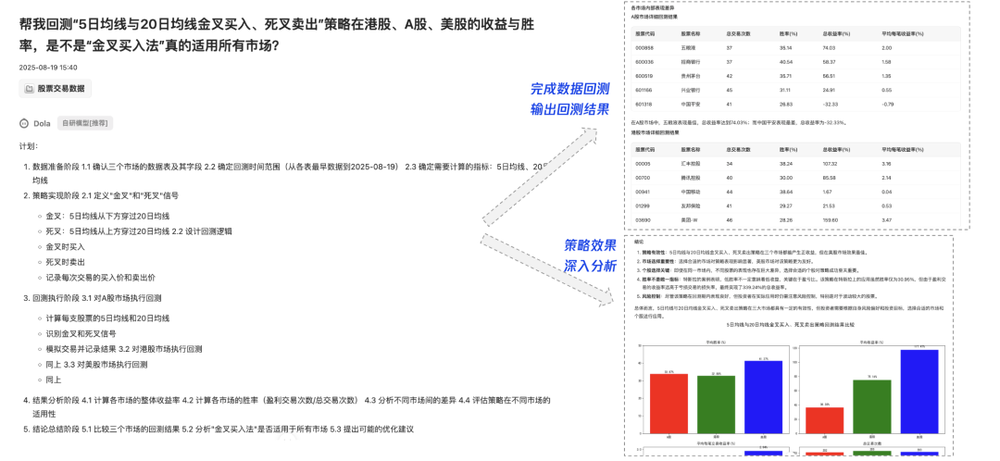
可以看到dola在接收到“金叉买入法回测”这个问题之后，首先能自己生成一个计划，包括了需要进行的数据准备、策略实现、回测实现和结果分析等详细内容。
在按照自己的计划执行完毕后，dola最终产出回测结果，完成可视化并进行深入分析总结，产出一份完整的回测报告。
同时还可以将分析的报告做成一个美观的可视化插画/静态网页/看板，大大增加了报告的可读性：
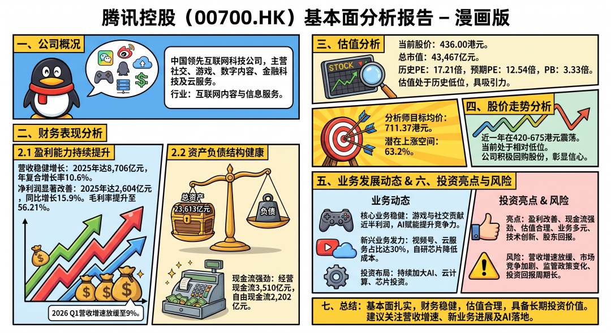
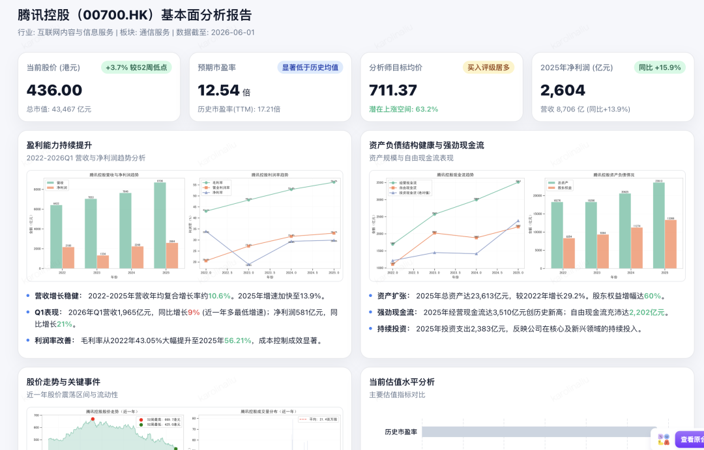
（上图左为Dola生成的插画报告，右为静态网页。仅做样例展示参考，不构成分析建议）
这里只是以股票回测这样一个比较复杂的案例场景展开，大家应该可以想象到，在工作场景中，Dola对于日常数据分析工作的提效程度是显而易见的。

归属：[[02-输入/按主题/AI与效率/_index|AI与效率]]